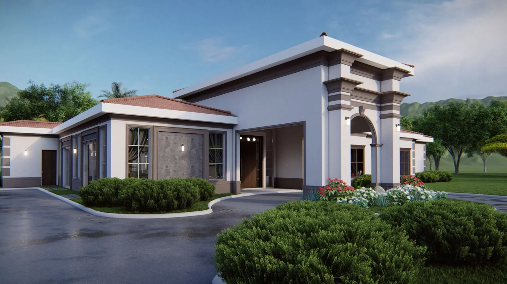
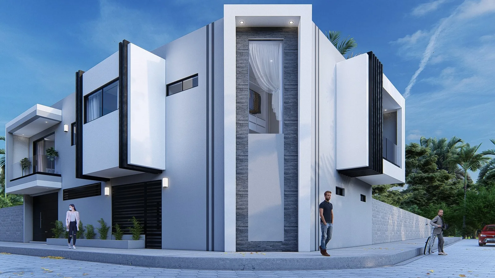
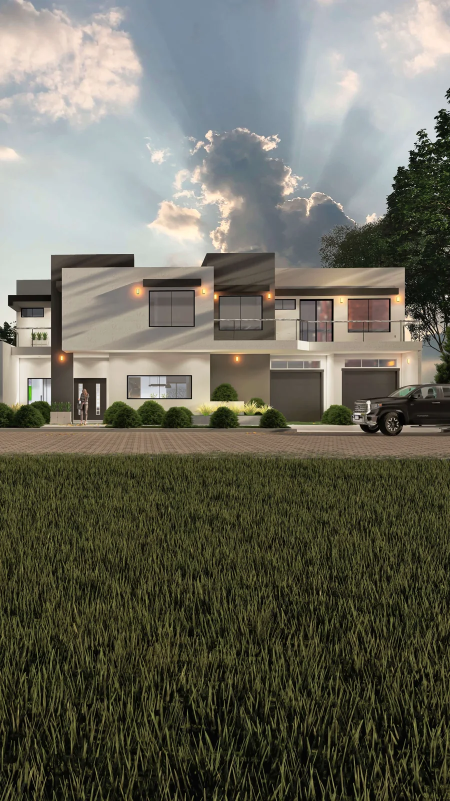
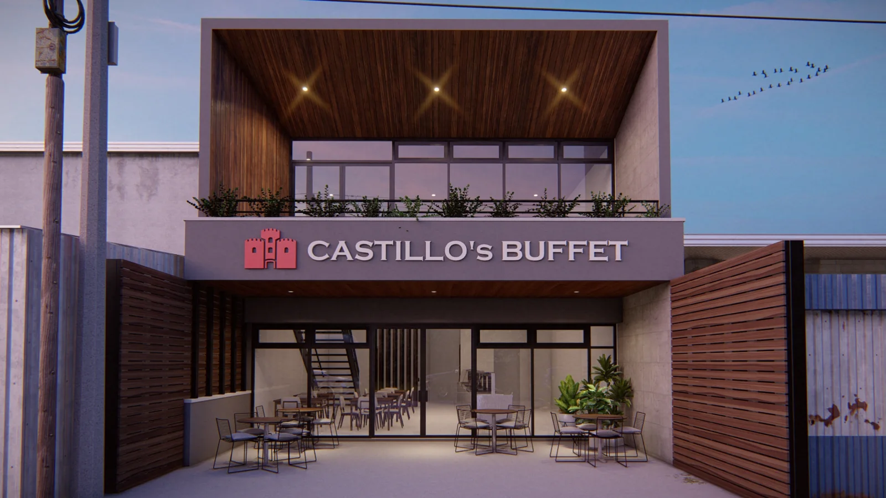
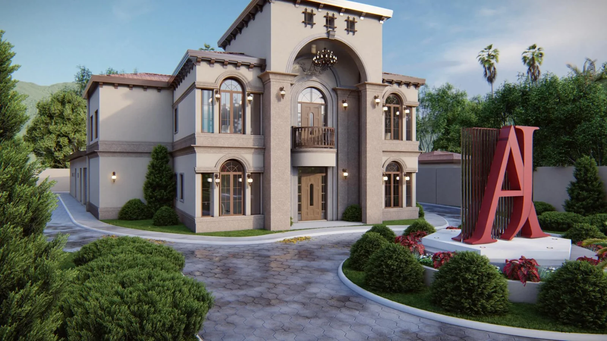
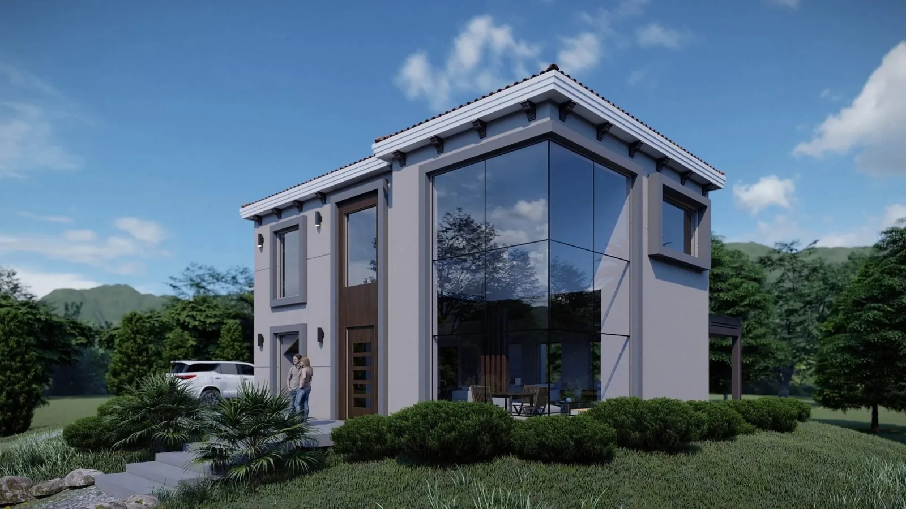

VER PROYECTOHabitacional / Portafolio
ESTUDIO / PROYECTOS
Explora los proyectos por categoría y encuentra la idea que conecta contigo.
6 PROYECTOS / TODAS LAS CATEGORÍAS

VER PROYECTOHabitacional / Portafolio

VER PROYECTOHabitacional / Portafolio

VER PROYECTOHabitacional / Portafolio

VER PROYECTOComercial / Portafolio

VER PROYECTOIndustrial / Portafolio

VER PROYECTOHabitacional / Portafolio
Prueba con otra palabra o elimina los filtros para volver al catálogo.
Has llegado al final del portafolio.
Quiero hablar de un proyecto